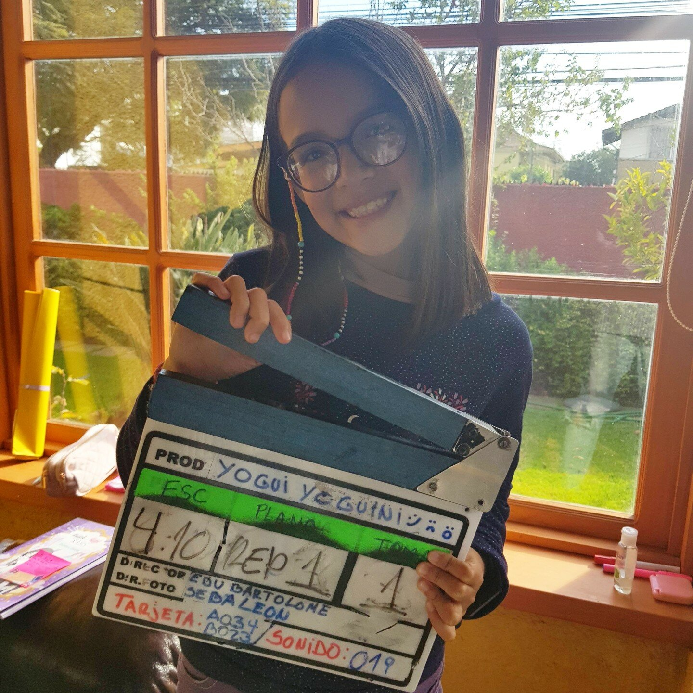
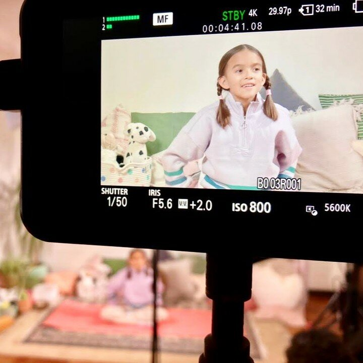
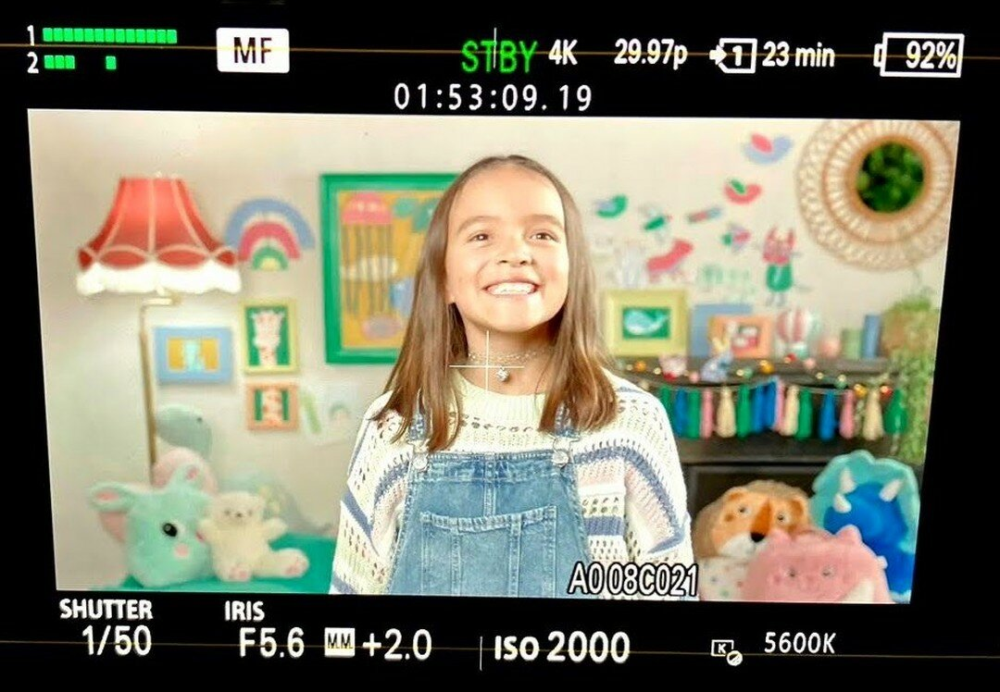
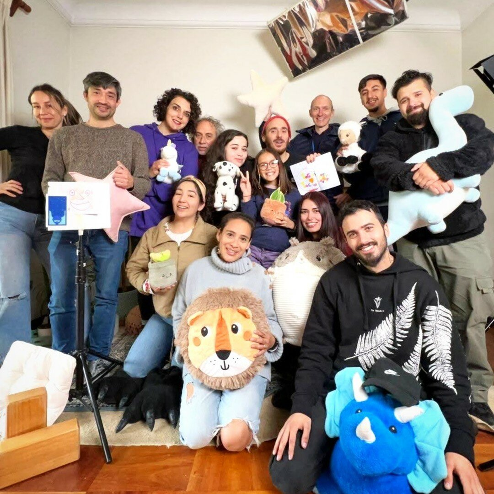

¿Quién dice que la búsqueda del bienestar y equilibrio es solo para adultos? En NTV, estamos encantados de presentar "Yogui Yoguini", un programa especial para niños, conducido por la joven de 10 años, Luz, junto a su mamá Carmen Sepúlveda, fundadora de YogaKiddy.
La Magia Detrás de Yogui Yoguini

Este programa no es solo otro espacio de yoga; es una iniciativa respaldada por la experiencia y la pasión de Carmen en YogaKiddy, una organización dedicada a enseñar yoga a niños.
Ofrece formaciones tanto presenciales como en línea, y materiales didácticos como cartas de yoga para niños. Con tal experiencia y conocimiento, "Yogui Yoguini" está destinado a ser un recurso invaluable para los más pequeños.
Una Emoción por Capítulo

El programa consta de 26 capítulos, cada uno centrado en una emoción diferente. Desde la alegría hasta la tristeza, pasando por la ira y la empatía, cada episodio ofrece prácticas de yoga, técnicas de respiración y meditaciones diseñadas para que los niños comprendan y gestionen mejor sus emociones.
¿Por qué es tan relevante?

En una época en que los niños enfrentan una cantidad cada vez mayor de desafíos y estímulos, aprender a gestionar las emociones es crucial. "Yogui Yoguini" proporciona las herramientas necesarias para ayudar a los niños a desarrollar habilidades emocionales y físicas que les serán útiles a lo largo de sus vidas.
Un Puente entre la Educación Física y Emocional en Escuela y Hogar
"Yogui Yoguini" es un excelente recurso educativo tanto en escuelas como en el hogar. En el ámbito escolar, el programa podría integrarse en las clases de educación física o bienestar, ofreciendo una forma alternativa y atractiva de abordar la salud física y emocional. Los maestros pueden usar cada episodio como punto de partida para discutir diversas emociones y cómo manejarlas, lo que podría ser especialmente útil en clases de psicología o educación emocional.
En el hogar, los padres pueden ver los episodios con sus hijos como una actividad conjunta, seguida de una discusión sobre lo que aprendieron o experimentaron. Esto no solo fomenta la actividad física sino que también abre canales de comunicación sobre temas emocionales, que a menudo son difíciles de abordar.
"Yogui Yoguini" es más que un programa de TV; es una forma de vida, una oportunidad para que los niños se embarquen en un viaje de autodescubrimiento y bienestar emocional. ¡Únete a Luz y Carmen en este viaje emocionante y enriquecedor!